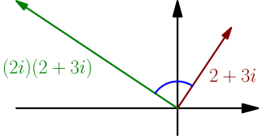
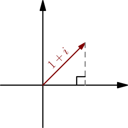
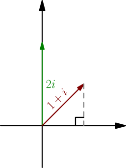
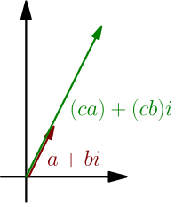
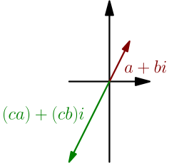
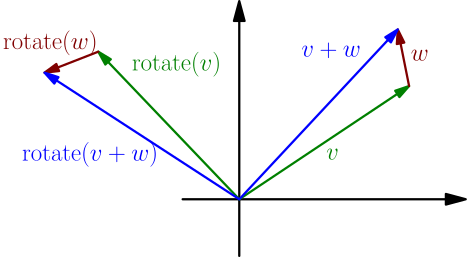
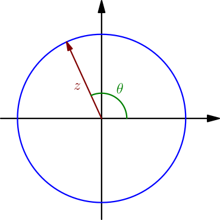

Multiplying Complex Numbers¶
We already know what multiplying a real number and a complex number does, $c(a+bi) = (ca)+(cb)i$ for all real numbers $c$ and complex numbers $a+bi$. Now our goal is to define a multiplication for all complex numbers. It will be an operation that takes in two complex numbers, $z$ and $w$, and outputs another complex number, denoted $zw$. We want it to have at least these properties, for all real numbers $a,b,c \in \mathbb{R}$ and complex numbers $v,w,z \in \mathbb{C}$:
- Compatibility with the multiplication defined previously: $(c + 0i)(a + bi)$ as a complex number multiplication must produce $(ca) + (cb)i$
- Multiplying $i$ with itself behaves as expected: $i^2 = -1$
- Order doesn't matter: $zw=wz$
- Parentheses don't matter: $z(vw)=(zv)w$ (when this rule applies, we can write $zvw$ without any parentheses, and it doesn't matter whether it means $(zv)w$ or $z(vw)$)
- Distributing: $z(v+w)=zv+zw$
On the rest of this page, I will call this the wish list. Using the wish list, we can multiply any two complex numbers $a + bi$ and $x + yi$: $$ \begin{align} (a + bi)(x + yi) &= (a + bi)x + (a + bi)(yi) \\ &= ax + (bi)x + (a + bi)(yi) \\ &= ax + (bi)x + (yi)(a + bi) \\ &= ax + (bi)x + (yi)a + (yi)(bi) \\ &= ax + bxi + ayi + byi^2 \\ &= ax + bxi + ayi + by(-1) \\ &= ax + bxi + ayi + (-by) \\ &= (ax - by) + (bx + ay)i \end{align} $$ I don't recommend memorizing the resulting formula. To calculate a complex number multiplication like $(2+3i)(4-5i)$, just expand it as you would usually do and apply $i^2 = -1$; the wish list essentially says that it's how complex number multiplication works.
Any complex number multiplication can be calculated using only the wish list.
Note that the complex number multiplication is neither dot product nor cross product (TODO); it's something else. To see this, note that the vector corresponding to $i$ is $\J$. Its dot product with itself is $$ \J \cdot \J = (0\I + 1\J) \cdot (0\I + 1\J) = 0^2 + 1^2 = 1, $$ and its cross product with itself, when $i$ is thought of as the vector $0\I+1\J+0\K$, is $$ \begin{vmatrix} \I & \J & \K \\ 0 & 1 & 0 \\ 0 & 1 & 0 \end{vmatrix} = \I(0-0) - \J(0-0) + \K(0-0) = \vec 0. $$ Neither of these is $-1$, and we required $i^2 = -1$.
The wish list is good for calculating complex number multiplications, but currently we don't have any way to visualize the multiplication like we can visualize complex number addition. Let's fix that.
Observations¶
With the wish list, we get $$ (2i)(2 + 3i) = (2i)2 + (2i)(3i) = 4i + 6i^2 = 4i - 6 = -6 + 4i. $$ Here are the vectors corresponding to $2+3i$ and $-6+4i$:

Let's make these observations (using angles and lengths):
- The blue angle in the picture looks like 90 degrees, and it actually is 90 degrees. To verify this, you can calculate the dot product of the vectors corresponding to $2+3i$ and $-6+4i$. You should get $0$, which means that the vectors are perpendicular.
- The length of $(2i)(2+3i)$ is two times the length of $2+3i$.
Note that the angle of $2i$ is 90 degrees and the length of $2i$ is $2$. What seems to be happening is that when calculating a complex number multiplication, the angles get added and the lengths get multiplied.
Let's do another example. We multiply $1+i$ with itself.

The angle of this complex number is 45 degrees, and its length is $$ \sqrt{1^2 + 1^2} = \sqrt{2}. $$ To multiply $1+i$ with itself, we can use $(a+b)^2 = a^2 + 2ab + b^2$, because the derivation of that rule (TODO) can be done using only the wish list properties, and we get $$ (1+i)^2 = 1^2 + 2i + i^2 = 1+2i-1 = 2i, $$ which is a complex number with length $2=\sqrt{2}\sqrt{2}$ and angle $90^\circ = 45^\circ+45^\circ$ as expected.

Why do angles get added and lengths get multiplied?¶
Let's define an operation that takes in two complex numbers $z$ and $w$, and results in another complex number that we shall denote with $z \star w$. (I don't think anyone else uses this notation, and I won't use it after this derivation.) We define the $\star$ operation to do what the multiplication $zw$ seems to do: $z \star w$ is a complex number such that $$ \text{length of $(z \star w)$} = (\text{length of $z$})(\text{length of $w$}) $$ and $$ \text{angle of $(z \star w)$} = (\text{angle of $z$}) + (\text{angle of $w$}). $$ The angle of $0$ is undefined, but that doesn't matter; if $z=0$ or $w=0$, then the length of $z \star w$ will be zero anyway, and so $z \star w = 0$ as well, regardless of the angle.
This operation satisfies all properties of the wish list; that is, for all $a,b,c \in \mathbb{R}$ and $v,w,z \in \mathbb{C}$:
-
To show that we have $c \star(a+bi) = (ca)+(cb)i$,
we ensure that both sides have the same length and angle.
The length of $(ca)+(cb)i$ is the length of $a+bi$ multiplied by the absolute value $\abs{c}$,
just like with vectors,
and because $\abs{c}$ is the length of $c$ when $c$ is viewed as a complex number,
that's also the length of $c \star (a+bi)$.
Let's check that the angles match too:
-
If $c$ is positive, then the angle of $(ca)+(cb)i$ is the angle of $a+bi$,
because the vector gets "stretched" to be $c$ times longer, without changing the angle.

In this case, the angle of $c \star (a+bi)$ is $$ (\text{angle of $a+bi$}) + \underbrace{(\text{angle of $c$})}_0, $$ so that too is just the angle of $a+bi$.
-
If $c$ is negative, then $a+bi$ and $(ca)+(cb)i$ are on the opposite sides of $0$:

Because the angle of $c$ is 180 degrees, the angle of $c \star (a+bi)$ is 180 degrees more than the angle of $a+bi$, so that too is on the opposite side of $0$. Again, it has the same angle as $(ca)+(cb)i$.
- If $c=0$ (or $a+bi=0$), then $c \star(a+bi)$ and $(ca)+(cb)i$ are both zero.
-
If $c$ is positive, then the angle of $(ca)+(cb)i$ is the angle of $a+bi$,
because the vector gets "stretched" to be $c$ times longer, without changing the angle.
- Because the length of $i$ is 1 and the angle is 90 degrees, the length of $i \star i$ is also 1 and its angle is 180 degrees. So, we have $i \star i = -1$.
- Order and parentheses don't matter when adding or multiplying real numbers. Because calculations like $z\star v$ or $(z \star v) \star w$ add the angles and multiply the lengths of all complex numbers involved, order and parentheses don't matter with $\star$ either.
-
Let's check that the distributing $z(v+w)=zv+zw$ works.
Consider a rotation around $0$ by the angle of $z$.
This can be described like this: $\rotate(w)$ is a complex number
just like $w$ but with the angle of $z$ added to its angle.
Now $z \star w$ is just like $\rotate(w)$, but with the length multiplied by the length of $z$.
In other words,
$$
z \star w = \abs{z} \rotate(w).
$$
The following picture shows that $\rotate(v+w)=\rotate(v)+\rotate(w)$,
because the entire triangle created by $v$, $w$ and $v+w$ gets rotated:

By multiplying both sides of $\rotate(v+w)=\rotate(v)+\rotate(w)$ with $\abs{z}$ and distributing it like we usually do when multiplying vectors and numbers, we get $$ \underbrace{\abs{z}\rotate(v+w)}_{z \star (v+w)} = \underbrace{\abs{z}\rotate(v)}_{z \star v} + \underbrace{\abs{z}\rotate(w)}_{z \star w}. $$ The angle of $z$ is undefined when $z = 0$, but $z\star(v+w)=(z \star v) + (z \star w)$ is also true in that case; then it just says that $0 = 0+0$.
Because any complex number multiplication $zw$ can be calculated using only the wish list properties and the $\star$ operation satisfies the wish list properties, $z \star w$ must be $zw$. So, our $\star$ operation really is the complex number multiplication.
When multiplying complex numbers, we can add the angles and multiply the lengths: \begin{align*} \text{angle of $zw$} &= (\text{angle of $z$})+(\text{angle of $w$}) \\ \abs{zw} &= \abs{z}\,\abs{w} \end{align*}
De Moivre's formula¶
Let $z$ be a complex number with angle $\theta$ and length 1. It is on the unit circle of radius $1$ centered at $0$, at the angle $\theta$.

With trig, we see that $z = \cos(\theta) + i\sin(\theta)$.
We calculate $z^n$ for any positive integer $n$. Because the length of $z$ is 1, the length of $z^2$ is also $1$, and so is the length of $z^3 = z^2 \cdot z$ and so on. So, the length of $z^n$ is $1$. The angle of $z^2$ is $\theta+\theta=2\theta$, the angle of $z^3$ is $2\theta+\theta=3\theta$, and so on, so the angle of $z^n$ is $n\theta$. Because $z^n$ has length $1$, it's on the unit circle, just like $z$ but with angle $n\theta$ instead of $\theta$, and we get $$ z^n = \cos(n\theta) +i\sin(n\theta). $$
For any angle $\theta$ and positive integer $n$, we have $$ (\cos(\theta)+i\sin(\theta))^n = \cos(n\theta)+i\sin(n\theta). $$ This is known as De Moivre's formula.
Example: $\sin(2\theta)$ and $\cos(2\theta)$¶
By plugging in $n=2$ to De Moivre's formula and using $(a+b)^2=a^2+2ab+b^2$, we get $$ \begin{align} \cos(2\theta) + i\sin(2\theta) &= (\cos(\theta) + i\sin(\theta))^2 \\ &= (\cos(\theta))^2 + 2\cos(\theta)i\sin(\theta) + (i\sin(\theta))^2 \\ &= \cos^2(\theta) - \sin^2(\theta) + 2\sin(\theta)\cos(\theta)i, \end{align} $$ where the minus in front of $\sin^2(\theta)$ came from $i^2=-1$. By comparing the real parts and imaginary parts ($x$ and $y$ coordinates of vectors corresponding to the complex numbers) on both sides, we get the following result.
For any angle $\theta$, we have $$ \begin{align} \cos(2\theta) &= \cos^2(\theta) - \sin^2(\theta), \\ \sin(2\theta) &= 2\sin(\theta)\cos(\theta). \end{align} $$
A similar derivation can be used to write $\sin(n\theta)$ and $\cos(n\theta)$ using only $\sin(\theta)$ and $\cos(\theta)$, with any other positive integer $n$. For doing that, one needs to expand $(a+b)^n$, and the binomial formula can be used for that.